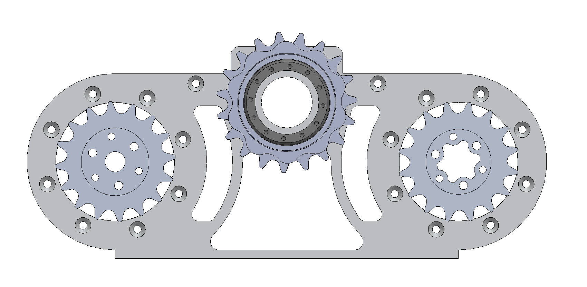

This section explains how the model is mapped to the real robot. Calibration and tuning are done in stages so the robot responds as expected, while safety functions are kept active throughout setup. The process is documented step by step so software states and hardware motion stay aligned.
Startup calibration runs in a fixed gate sequence to set a safe initial state before hold mode or balancing is enabled. Because the system uses single-encoder actuation, the absolute joint position is unknown at power-on. A mechanical jig reference is used so each motor can register its initial joint position correctly.
Preconditions: the robot is mechanically supported in startup posture (jig condition), emergency-stop paths are active (hardware and controller), power rails are healthy, and CAN motor communication is online.
Startup sequence
| Step | What happens | Why this matters | Reference code |
|---|---|---|---|
| 1 | Clear startup flags, set motor outputs to zero, and lock controller in calibration mode. | Guarantees known-safe initialization and prevents unintended motion from stale state. | startup_calibration_sequence.c |
| 2 | Capture IMU stationary window and estimate gyro/accelerometer bias. | Removes startup drift and provides reliable attitude/rate channels for control. | imu_bias_capture.c |
| 3 | Verify encoder channels are online, updating, and within the expected range. | Prevents FK/IK/state estimation from using stale or corrupted encoder data. | encoder_startup_check.c |
| 4 | Issue low-amplitude actuator test commands and check measured direction. | Confirms driver health and polarity/sign correctness before high-gain control. | actuator_readiness_gate.c |
| 5 | Evaluate readiness flags and transition mode only when all checks pass. | Enforces safe sequence: calibration \(\rightarrow\) leg-length hold \(\rightarrow\) LQR balancing. | controller_mode_transition.c |
| 6 | Apply over-tilt protection and immediately cut off torque output when pitch exceeds safety threshold. | Prevents tip-over escalation and protects hardware/operator during abnormal posture events. | over_tilt_safety_cutoff.c |
Pass/fail rule: any sensor timeout, invalid offset, or actuator fault keeps balancing disabled and forces recalibration or safe hold.
Startup outputs: imu_bias_ready, encoder_ready, actuator_ready,
calib_ready, and system_ready.

The leg mechanism is designed with mechanical advantage through the chain transmission linking the motor output to the central cascaded sprocket that drives leg-joint angles \(\phi_1\) and \(\phi_2\). So, motor encoder variation cannot be used directly as joint-angle variation. A conversion model must include both: motor internal gearbox ratio and external chain/sprocket ratio.
Let \(N_g\) denote the motor gearbox ratio (motor-rotor turns per gearbox-output turn), and let \(N_c\) denote the chain ratio (driver sprocket teeth divided by driven sprocket teeth). The angle conversion from motor rotor to joint angle is: \[ \theta_{\mathrm{joint}} = s\cdot\frac{\theta_{\mathrm{motor}}}{N_g}\cdot N_c + \theta_0, \] where \(s\in\{-1,+1\}\) represents sign convention and \(\theta_0\) is the calibrated zero offset.
If encoder output is in counts \(c\) with encoder resolution \(C_{\mathrm{rev}}\) (counts/rev), then \[ \theta_{\mathrm{motor}} = 2\pi \frac{c}{C_{\mathrm{rev}}}, \qquad \Delta\theta_{\mathrm{joint}} = s\cdot\frac{2\pi}{C_{\mathrm{rev}}}\cdot\frac{N_c}{N_g}\cdot \Delta c. \] This directly gives the change in \(\phi_1\) or \(\phi_2\) for a measured encoder increment.
Numerical substitution (current prototype ratios)
Using the documented transmission values: \(N_g=6\) (motor internal reduction \(1{:}6\)) and chain stage ratio \(115/75\) as torque step-up, so \(N_c = 75/115\) in the speed-conversion equation (driver/driven).
\[ \frac{\Delta\theta_{\mathrm{joint}}}{\Delta\theta_{\mathrm{motor}}} = \frac{N_c}{N_g} = \frac{75/115}{6} = 0.1086957. \] For one motor revolution: \[ \Delta\theta_{\mathrm{joint}} = 360^\circ \times 0.1086957 = 39.13^\circ. \]
Final conversion result: 1 motor revolution corresponds to approximately \(39.13^\circ\) joint-angle change (before sign \(s\) and zero-offset \(\theta_0\) application).
In encoder-count form: \[ \Delta\theta_{\mathrm{joint}}(\deg/\mathrm{count}) = \frac{360^\circ}{C_{\mathrm{rev}}}\cdot\frac{75/115}{6} = \frac{39.13^\circ}{C_{\mathrm{rev}}}. \]
Implementation requirements
Runtime offset calibration is implemented to align encoder-reported joint angles with the mechanical zero reference used by the control model. The corrected joint angle is defined as: \[ \theta_{\mathrm{true}} = \theta_{\mathrm{encoder}} - \theta_{\mathrm{offset}}. \] The offset term is obtained from a known reference pose (e.g., jig-based hold pose): \[ \theta_{\mathrm{offset}}=\theta_{\mathrm{encoder,ref}}-\theta_{\mathrm{ref,true}}. \]
This compensation is required because startup encoder origin, assembly tolerance, and sensor mounting variation introduce a persistent angular bias. Without offset correction, forward/inverse kinematics, Jacobian mapping, and LQR/VMC control allocation may become sign-inconsistent with hardware behavior.
Firmware implementation reference: runtime_joint_zero_offset.c
Calibration and runtime procedure
Joint zero-offset table (sample)
| Joint | Reference Angle \(\theta_{\mathrm{ref,true}}\) (deg) | Encoder at Capture \(\theta_{\mathrm{encoder,ref}}\) (deg) | Offset \(\theta_{\mathrm{offset}}\) (deg) |
|---|---|---|---|
| Left Hip | 0.00 | 12.40 | 12.40 |
| Left Knee | 0.00 | -8.15 | -8.15 |
| Right Hip | 0.00 | 11.90 | 11.90 |
| Right Knee | 0.00 | -7.80 | -7.80 |
Table values should be updated from the latest calibration session and saved with the current firmware revision before hardware testing.
This section presents the initial calibration process, followed by transition of the motors into a “leg length” hold state. Once this state is established, the robot can then proceed into the LQR balancing sequence.
Coordinate and sign alignment was done during integration so model equations, gain signs, sensor signs, and actuator directions stayed consistent. The main mismatch found was the body-pitch sign definition between model and firmware.
In the reduced model, forward body tilt is defined as \(+\phi\). In firmware, forward tilt appears as negative pitch. So the exported LQR gain matrix requires a sign conversion on the pitch states: \[ K_{\mathrm{firmware}}(:,5:6) = -K_{\mathrm{model}}(:,5:6). \] This correction is applied before hardware testing so that \(\mathbf{u}=-K\mathbf{x}_{err}\) keeps the restoring direction correct during control.
Firmware implementation reference: sign_convention_alignment_check.c
Sign-alignment process used during bring-up
Live-expression verification records (integration summary)
| Signal Channel | Excitation / Observation | Live Expression Reading | Applied Correction | Final Runtime Mapping |
|---|---|---|---|---|
| Body pitch | Manual forward tilt of chassis | imu_heading.pit decreased |
Pitch-state sign inversion in exported gain | \(\phi_{\mathrm{model}}=-\mathrm{pitch}_{\mathrm{fw}}\) |
| Body pitch rate | Forward pitch impulse / release | gyro_y sign opposite to model \(+\dot{\phi}\) |
Derivative term and state mapping aligned with negative sign | \(\dot{\phi}_{\mathrm{model}}=-\omega_{y,\mathrm{fw}}\) |
| Wheel velocity | Forward drive command at low amplitude | Left/right raw RPM signs differ by motor mounting | Channel-specific sign mapping before averaging | \(\dot{x}_{\mathrm{fw}}=(v_L+v_R)/2\) with corrected wheel signs |
| Joint encoder angle | Positive commanded joint motion | One mirrored side produced opposite encoder polarity | Per-joint sign coefficient \(s_i\in\{-1,+1\}\) | \(\theta_{i,\mathrm{true}}=s_i(\theta_{i,\mathrm{enc}}-\theta_{i,\mathrm{offset}})\) |
Outcome: after applying these mappings, the observed hardware response matched model expectations for disturbance rejection, and the LQR/VMC command directions remained consistent through the full sensing-to-actuation path.
This section presents the validation flow from simulation to hardware. The validation is carried out in stages to reduce setup risk and catch model-controller mismatch early, before full hardware testing. In this sequence, manual disturbances are applied (up/down and left/right) while checking that the controller mapping responds correctly for both positive and negative command increments. The motors are commanded to shift the wheel-center of the leg assembly, i.e., the forward-kinematics point \(\mathbf{G}\), in discrete steps of \(20\,\mathrm{mm}\) per increment. This check confirms both forward-kinematic consistency and sign-convention correctness across sensing, state mapping, and actuation. The corresponding implementation code is validation_sim_to_hw_sequence.c. During this stage, leg length is maintained by a leg-length PD loop kept in a preliminary (not fully tuned) condition, since it is used only as test support.
Loading...